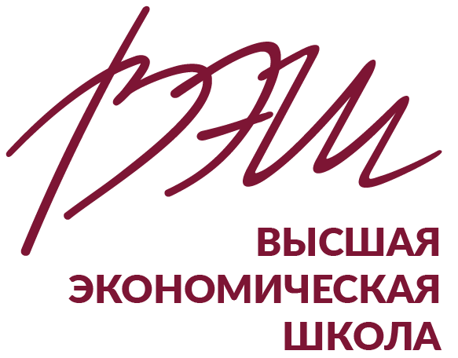

Горизонтальный с подписью
Для документов, обложек и титульных слайдов.
Скачать PNG ↓ЕДИНЫЙ СТИЛЬ. ОБЩАЯ БИБЛИОТЕКА.
Находите исходники, выбирайте основу
и собирайте визуалы для своей задачи.
Первый этап по встрече 26 ноября
Общая библиотека → Сверка палитры → Пилот МКОТ БИБЛИОТЕКИ К МАТЕРИАЛУ
ОПОРА ДЛЯ КАЖДОГО МАТЕРИАЛА
Исходники и короткие правила всегда рядом.
Открыть фирменный стиль →Один набор данных для нескольких носителей, состояний и плашек. Основой станут новые карточки мастер-классов; сейчас можно проверить сам сценарий.
ОТ ПОВСЕДНЕВНОЙ ЗАДАЧИ К МАКЕТУ
Небольшой набор понятных основ для повторяющихся задач команды.
По этому запросу ничего не найдено. Попробуйте другое название или тип материала.
ПЕРВЫЙ ЭТАП
Исходники и универсальные элементы, которые можно использовать в Figma, презентациях, письмах и документах.
Логотипы и палитра уже представлены в прототипе. Следом: SVG-иконки по темам, линии и рамки, оформление цитат, фото, блоки писем, исходники шаблонов и требования к размерам.
У каждого материала будут источник, версия и статус проверки. Ссылки на новые Figma-макеты добавим после получения; платные права редактирования не меняем.
Для документов, обложек и титульных слайдов.
Скачать PNG ↓
Для компактных носителей и брендированной продукции.
Скачать PNG ↓Сохраняйте пропорции и исходные цвета. На тёмном фоне используйте белую подложку.
В исходном логотипе сохранены #7D1534 и #839FAE. Для графического акцента используется #8D1638 из сводного листа. В исходном слайде цветов есть расхождения подписей; они не служат основанием для перекраски логотипа.
ЗАГОЛОВКИ
Bold, ExtraBold или Heavy для русских заголовков. Курсив — для короткого акцента.
ОСНОВНОЙ ТЕКСТ
Regular для текста, Bold для выделения. Verdana — для писем.
ГРАФИКА
Используем исходные мотивы. Допускается перекраска в фирменные цвета.
Скачать SVG ↓Интерфейс и эскизы этого прототипа набраны Inter. Лицензионные шрифты не распространяются через Git; подключение Qanelas и Lato к будущему редактору и экспорту нужно проверить отдельно.
ПЕРВЫЙ ТЕСТ АВТОМАТИЗАЦИИ
Заполните данные один раз и проверьте, как они переходят в комплект карточек.
Фото преподавателя обозначено областью в макете. Загрузка, кадрирование и выходные размеры будут настроены по новым карточкам.
Одна замена темы, даты, спикера или фото обновляет весь комплект. Состояния «открыто» и «закрыто» и необходимые плашки берутся из утверждённого макета. Длинный текст, переносы и фото проверяются во всех носителях. Выходные изображения соответствуют согласованным размерам, а редактируемые исходники карточек сохраняются в Figma.
ВАШИ МАТЕРИАЛЫ
В прототипе черновики хранятся только в этом браузере. Для переноса скачайте задание в JSON.
Выберите шаблон и добавьте содержание — черновик появится здесь после сохранения.
Выбрать шаблон →ПРОЕКТ ДЛЯ ОБСУЖДЕНИЯ
«Студия ВЭШ» — рабочее название. Единая точка входа в правила, исходники и подготовку фирменных материалов.
У каждого шаблона есть назначение, пример, редактируемый исходник, версия и понятные границы изменений. Сложные материалы передаются дизайнеру с готовым заданием.
Команда организует хранение, собирает цвета, источники и известные изменения; сводная палитра проходит подтверждение.
Первый тест генератора — на новых карточках мастер-классов: состояния, плашки, соцсети и обложки. Исполнитель разработки и дата пилота не назначены.
Запросы команды: презентации, раздатка, блоки enKod, визуалы очных МК и требования к печати. Очерёдность и владельцев ещё предстоит определить.
После проверки пилота — другие комплекты и помощь с подбором изображений. База промптов предложена после определения стилистики; отдельного срока нет.
ПлощадкаБудущий раздел data.veshk.ru
ИнструментыFigma, PowerPoint, Wagtail, enKod
ИсходникиРедактируемые карточки в Figma; универсальная библиотека доступна и вне Figma
ПалитраСобрать фактические источники и подтвердить. Точных кодов на встрече не зафиксировали
Следующее обсуждениеОриентировочно через две недели, в среду или четверг. Точная дата не назначена
ОткрытоСхема доступа к исходникам, окончательная стилистика, порядок обновления шаблонов, распределение визуалов МК
Может ли сотрудник самостоятельно найти подходящий шаблон, заполнить его без поломки композиции и передать редактируемый материал? Замерим время выполнения, причины возврата дизайнеру и ошибки экспорта. Целевые значения согласуем после первого замера.
Новые корпоративные обложки и база промптов не утверждены. Прототип не закрепляет эти обязанности и не меняет доступ в платном пространстве Figma. Автоматическая публикация, генерация PPTX/PDF и подключение рабочих сервисов не реализованы.